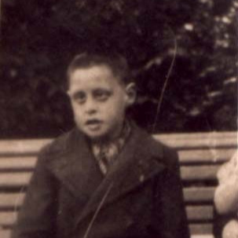

Portrait d’archive
Gilbert Lévy (F)
Gilbert LEVY (F)
Gilbert LEVY est né le 01/12/1926 à Belfort en France.
Il est fusillé à Pont d'Ain le 12/06/1944. Il avait 18 ans.
Nom : LEVY
Prénom(s) : Gilbert Robert
Date naissance : 01/12/1926
Âge (ans) : 17
Lieu naissance : Belfort
Pays ou département : Territoire de Belfort
Lieu rassemblement : Pont d'Ain
Dernière adresse :
Ville : Pont d'Ain
Code postal : 01160
Fusillé
Date d’exécution : 12/06/1944
Informations diverses : Fils de Marcel Lévy (07/03/1872 à Sierentz, Haut-Rhin), tailleur et de Clémentine Klementina née Shvab (18/02/1880 à Diemeringen, Bas-Rhin). Gilbert et ses parents furent fusillés par la milice le 12/06/1944 à Pont d’Ain. Seule leur fille Suzanne, épouse Steinberg en réchappa (Source: Maitron).
Fusillé